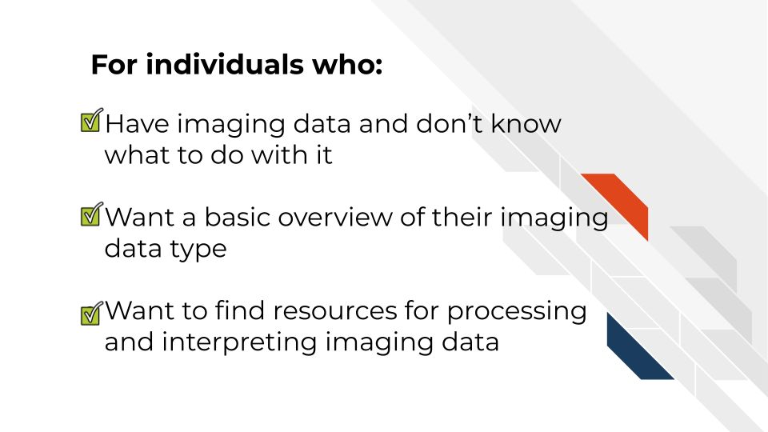
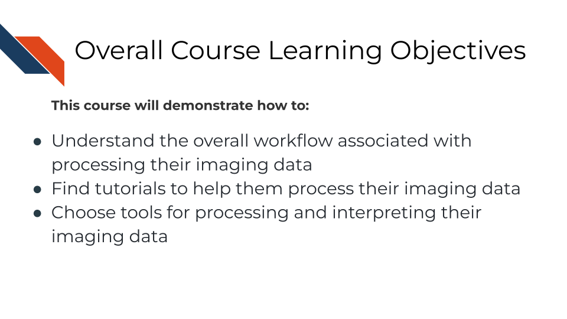

Chapter 1 Introduction
This is a living course meaning it is constantly changing and being updated. The goal for this course is to be a “wikipedia” of imaging data.
If you’d like to contribute, you can file a pull request on GitHub if you are comfortable with that sort of thing or email csavonen@fredhutch.org to ask how to get started.
1.1 Target Audience
The course is intended for students in the biomedical sciences and researchers who have been given imaging data and don’t know what to do with it or would like an overview of the different imaging data types that are out there.
This course is written for individuals who:
- Have imaging data and don’t know what to do with it.
- Want a basic overview of imaging data types.
- Want to find resources for processing and interpreting imaging data.

1.3 Motivation
Cancer imaging data hold untold amounts of information regarding cancer biology, but there are intrinsic challenges in handling this particular type of data properly. Cancer researchers are working to apply their expertise to the analysis of these vast amounts of data but training opportunities to properly equip them in these efforts can be sparse.
Often students and researchers need to utilize imaging data to reach the next steps of their research but may not have formal training in computational methods or the basics of the imaging data they are attempting to utilize.
This course attempts to give this researcher the basic bearings and resources regarding imaging data, in hopes that they will be equipped and informed about how to properly handle the data and obtain insights for cancer biology.
1.4 Curriculum

Goal of this course:
Equip learners with tutorials and resources so they can understand and interpret their imaging data in a way that helps them meet their goals and handle the data properly and appropriately.
This includes helping learners formulate questions they will need to ask others about their data
What is not the goal
Teach learners about choosing parameters or about the ins and outs of every imaging tool they might be interested in. This course is meant to connect people to other resources that will help them with the specifics of their imaging data and help learners have more efficient and fruitful discussions about their data with imaging informatic experts.